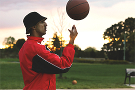

EXERCISING THE "WU" WAY
We all know the importance of physical activity and the integral role that it plays in the maintaince of a healthy mind and body, however, there are a lot of us who simply don’t get adequate abounts of it. For many people, being physically active is percieved to be a chore; something that they do because they have to, rather than doing it because they want to. Much of the time people’s motivation to exercise is extrinsic, and result oriented; meaning that their motivation is largely derived from the physical and mental benefits after they have completed their workouts. But when they are in the middle of their workouts, they cannot wait for it to be over. When there is minimal intrinsic enjoyment in the process of working-out, one’s motivation is bound to fizzle out sooner or later, resulting in long periods during which the individual is no longer getting any physical activity. This mentality makes it nearly impossible to maintain consistency when is comes to getting physical activity. The only way to avoid these burn-out phases it to find ways to make the process of exercising intrinsically satisfying. So how can this be achieved? Here are some tips to get you exercising the “WU” way!